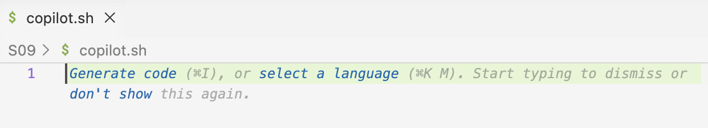
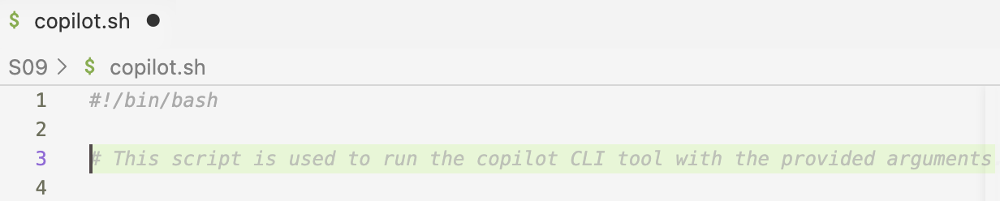
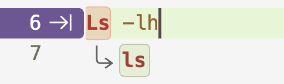
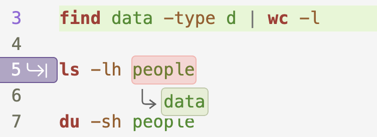
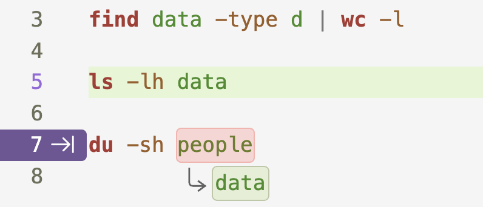
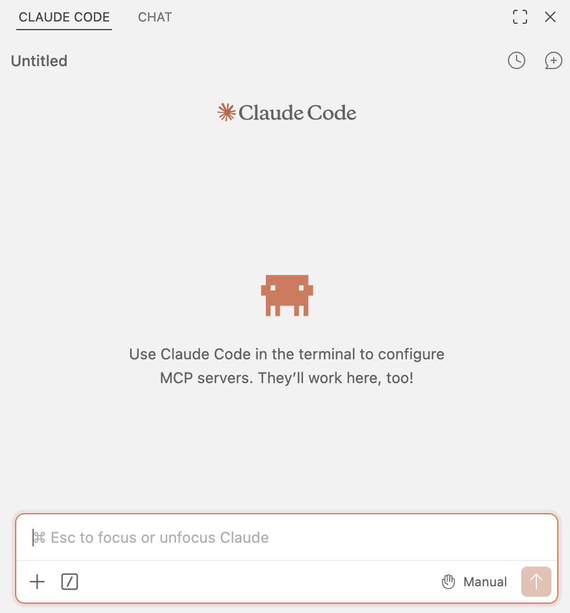
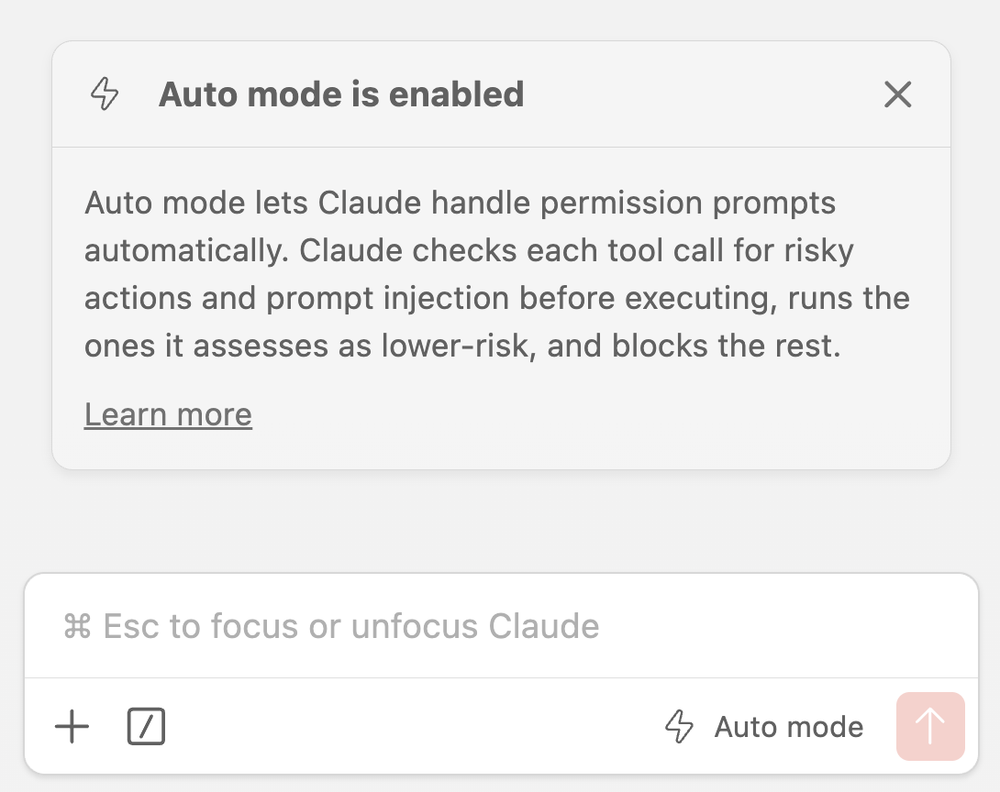

Using GitHub Copilot and Claude Code
Exploring different functionality, settings, and workflows
![]()
This page is still subject to change
1 Introduction
In this session, we’ll start using the AI tools Claude Code and GitHub Copilot, while connected to OSC in VS Code.
These tools are quite similar. But we’ll focus on Claude Code because the workshop has usage credits for this tool, and we’re using it in a way that has approval for use with institutional data. Therefore, you can use it also with your own data tomorrow afternoon, even if that’s sensitive data that cannot be shared publicly.
But we’ll start with GitHub Copilot, which provides a nice feature that Claude Code does not have: it can generate code directly in your VS Code editor, providing suggestions as you type your text and code.
Setting up
You should still have an active session in VS Code connected to OSC. If not, start a new session.
Instructions to start a new session
Open VS Code, or if you already have a window open that’s not connected to OSC, open a new VS Code window with
File>New Window.In the
Recentsection in the VS Code “Welcome” document, you should see thePAS3454OSC folder with theosc-cardinal-computeconnection — click on that line to open that folder and in the process connect to OSC!

If you don’t see the
PAS3454OSC folder in theRecentsection after Step 1, simply start a new session, for example like so:- Click the
Connect to...button in the “Welcome” document (also visible in the screenshot above), and select theosc-cardinal-computeconnection.
Once connected to OSC, click
File>Open Folder..., and select the folder/fs/scratch/PAS3454/people/<user>.Open a terminal and make sure you are in dir
/fs/scratch/PAS3454/people/<user>:pwd/fs/scratch/PAS3454/people/janeIf not, redo step 2! The terminal will automatically start in the folder you opened in VS Code.
Copy a shared data dir to your own dir:
# After this, the data will be in `/fs/scratch/PAS3454/people/<user>/iqbal` cp -rv /fs/scratch/PAS3454/data/iqbal .'/fs/scratch/PAS3454/data/iqbal' -> './iqbal' '/fs/scratch/PAS3454/data/iqbal/ref' -> './iqbal/ref' '/fs/scratch/PAS3454/data/iqbal/ref/GCA_000004655.2_ASM465v1_genomic.fna' -> './iqbal/ref/GCA_000004655.2_ASM465v1_genomic.fna' '/fs/scratch/PAS3454/data/iqbal/ref/GCA_000004655.2_ASM465v1_genomic.gff' -> './iqbal/ref/GCA_000004655.2_ASM465v1_genomic.gff' '/fs/scratch/PAS3454/data/iqbal/meta.tsv' -> './iqbal/meta.tsv' '/fs/scratch/PAS3454/data/iqbal/README.md' -> './iqbal/README.md' '/fs/scratch/PAS3454/data/iqbal/fastq' -> './iqbal/fastq' '/fs/scratch/PAS3454/data/iqbal/fastq/SRR31869592_2.fastq.gz' -> './iqbal/fastq/SRR31869592_2.fastq.gz' '/fs/scratch/PAS3454/data/iqbal/fastq/SRR31869601_2.fastq.gz' -> './iqbal/fastq/SRR31869601_2.fastq.gz' '/fs/scratch/PAS3454/data/iqbal/fastq/SRR31869592_1.fastq.gz' -> './iqbal/fastq/SRR31869592_1.fastq.gz' # [...output truncated...]We’re trying to mimic a situation where you have a self-contained research project dir, because:
- Our genAI tools won’t see files outside of your VS Code-opened dir!
- Having a single dir (with subdirs) with all your files, rather than files scattered around the file system ☠️, or files from different projects mixed together ☠️, is also good practice for reproducible research.
Create a new dir
S07(as in: session 7) within your/fs/scratch/PAS3454/people/<user>dir:mkdir S07Run the
treecommand to understand the current structure of your dirs and files:tree. ├── S9 ├── iqbal │ ├── README.md │ ├── fastq │ │ ├── SRR31869590_1.fastq.gz │ │ ├── SRR31869590_2.fastq.gz │ │ ├── SRR31869591_1.fastq.gz │ │ ├── SRR31869591_2.fastq.gz │ │ ├── [...output truncated...] │ ├── meta.tsv │ └── ref │ ├── GCA_000004655.2_ASM465v1_genomic.fna │ └── GCA_000004655.2_ASM465v1_genomic.gff
2 Code completions with GitHub Copilot
“Code completions”, also known as “code suggestions” or “inline suggestions”, are a feature of GitHub Copilot where you get suggestions for additional or modified code —or other text— as you type in your VS Code editor. There are two types of code completions, and we’ll go over these one by one.
2.1 Ghost text suggestions
Ghost text suggestions are the most common type of code completions. As you type, GitHub Copilot will provide suggestions in a light gray font, which you can accept by pressing the Tab key. We may think of ghost text suggestions as in turn consisting of two types of suggestions:
Suggestions that try to complete a line you are typing
Similarly, they may suggest a next line based on the previous one. For example, if you type #! as the first line of a shell script, GitHub Copilot is likely to suggest the full shebang line #!/bin/bash for you:
{kind=link}
#!, and the /bin/bash suggestion appeared.The purple highlighting is also done by Copilot to draw attention to it.
Suggestions based on a code comment you have written
These try to generate code that implements what you described in the comment. For example, if you write a comment # Count the number of dirs in `people` in a shell script, press Enter, and wait a second, Copilot should suggest something like this:
{kind=link}
Requesting these kinds of suggestions is similar to asking a question in the Copilot chat window, but is faster and more convenient (and cheaper) for small items, while not as suitable for more complex questions.
Exercise: Try it yourself
Open a new file in VS Code, and save it as
S07/copilot.sh.Instructions to create a new file
There are a number of ways you can do this, including:
File>New File, thenFile>Save As...Execute the command
touch S07/copilot.sh, then hold Ctrl/⌘ and click on the file name in the terminal to open it — the latter is a useful trick more generally.
You should immediately see the following, which is also a ghost text suggestion, in your new file. For now, ignore that — when you start to type it will disappear.

Like above, try to get a ghost text suggestion for a shebang line by typing
#!as the first line.Press Enter twice, and wait for a bit. Copilot should start guessing what the script is about (most of all, based on the file name), and provide the kind of comment often added to the top of a script to describe what it does. For example:

It can be fun or even useful to go down that rabbit hole (you can keep pressing Enter to get more suggestions!), but here, we will ignore that.
Like above, try to get a ghost text suggestion for a code comment by using the comment:
# Count the number of dirs in `people`.Think of a few questions of your own that you could ask Copilot in a code comment, and try them out. You can also play around with trying to get suggestions for code that you are typing.
For all code completions, pressing Tab will accept the suggestion, while Esc will explcitly dismiss it. You can also implicitly dismiss a suggestion by continuing to type.
2.2 Next edit suggestions
“Next edit” suggestions will suggest a modification to code or other text you have already written. A number of scenarios can trigger next edit suggestions, such as:
- Syntax, spelling, or style errors in your code (e.g., a missing closing bracket or quote)
- When you change one instance of a recurring pattern in your code (e.g., a variable name or a path), it will suggest to change the other instances as well.
As a very simple example, if you type the incorrect Ls -lh in your S07/copilot.sh file, and wait a second, Copilot will suggest to change it to ls -lh (with a lowercase l):

Ls is incorrect, and Copilot will recognize we are looking for ls instead.As always, press Tab to accept the suggestion.
As an example of the second scenario, consider the following code, which runs three commands to get information about the people dir and its contents:
# Count the number of dirs
find people -type d | wc -l
# List all files and dirs (non-recursively)
ls -lh people
# Get the total size of the `people` dir and its contents (recursively)
du -sh peopleIf you change the first instance of people to data, Copilot will suggest to change the other instances as well:

You’ll press Tab to accept a suggestion, and Tab to move on to the next suggestion, and Tab again to accept that one, and so on:

These types of suggestions are sometimes off-target (e.g., maybe you don’t want to change the other instances of people to data!), but in my experience, they are often quite useful and not just a time-saver, but also a way to avoid mistakes (e.g., forgetting to change one of the instances).
2.4 Practice
Exercise: Explore the Iqbal et al. data with help from Copilot
Ask questions about the reference GTF and FASTA files – details TBA
Ask questions about the FASTQ files – details TBA
Suggest to use code completion features using requests via comments
If you are not working with HTS data, and don’t think this is terribly interesting or helpful for you, but have some own data available, then you should feel free to ask questions about that data instead.
Idea: add a
README.mdfile and populate it?
3 Chat with Claude Code
Now, we’ll switch gears in two ways: from GitHub Copilot to Claude Code, and from code completion to chat (recall that Copilot also has chat functionality; and this is similar to that of Claude Code, but here we’ll focus on the latter).
In the right-hand side bar, if needed, click “CLAUDE CODE” to switch to the Claude Code tab. As we saw in a previous session, that looks something like this:

The text in the center is a random tip that pops up: yours is likely different.
There might be text just above the prompt box saying: “Prefer the Terminal experience? Switch back in Settings.” This refers to the fact that you can also also use Claude Code in the terminal (the Claude Code CLI), but we will not do that here and don’t really recommend switching.
The ghost text in the prompt box says “⌘ [or Ctrl] to focus or unfocus Claude”, which refers to switching your active cursor back and forth between the prompt box and the VS Code editor. At least for me, this doesn’t work and that seems to be a known issue.
3.1 A few prompts to get started
Write a very simple script to run FastQC on a FASTQ file
- Then, have it troubleshoot the (likely)
moduleproblem.
3.2 Features in the Claude Code prompt box
{kind=link}
Starting on the left side:
The
+icon allows you to add context in the form of files. In the context of in-editor chat, the files we want to are present …File in focus in the editor is automatically added (+ mention line-highlighting), but can be disregarded by clicking on the filename below the prompt box
Mention
@workspaceand implicit context of all files in the workspace
/also for adding context, and:- Switching models
- Setting effort, and toggling “Thinking”
On the right-hand side is the Permission Modes indicator. This is essentially to set the permission type Claude has to perform actions like editing files and running commands, and can be toggled between:
- Manual: Claude asks permission for each action.
- Edit automatically: Claude makes edits to files and runs basic commands without asking for permission.
- Plan mode: Claude writes a plan that is then opened as a rendered Markdown document, and which you can approve or (ask to) modify.
- Auto mode (not always visible): Claude determines on its own whether to ask for permission or not for specific actions, or to write a plan. In this mode, it is also more likely to ask you for clarifying questions.
Switch to Auto Mode, and you should see something like the following:

Clock icon: see previous chats
Chat icon with
+: start new chat
{kind=link}
{kind=link}
TBA - Show LiteLLM website
3.3 Additional prompts
Add functional bells and whistles to the script
Also report the time it took to run the script
3.4 Miscellaneous tips
- Option/Alt + K to persistently send a text selection to the prompt box
Footnotes
But should be familiar to those of you using version control!↩︎